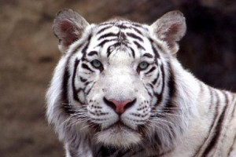

Tigre Blanco - Tigre de Bengala
El tigre blanco (también conocido como el tigre de Bengala) mide aproximadamente 3 metros de largo y pesa aproximadamente de 180 a 285 kg (400 a 569 LB). Su pelaje es más plano que el del tigre siberiano, el color rojizo es más intenso y las rayas son más oscuras. Los tigres blancos son de color blanco Bengala, no son albinos y no son una subespecie separada de los tigres. Tienen los ojos azules, la nariz rosada y la piel de un blanco crema cubierta con rayas de color chocolate. Los tigres blancos son hijos de los tigres que son portadores del gen inusual necesario para la coloración blanca. Los tigres blancos salvajes son especies raras.
Usualmente, se encuentran en la parte continental del sureste de Asia y en el centro y sur de la India. Los que viven en las islas han desaparecido casi por completo, la mayoría viven en zoológicos y parques con fauna especial. Los tigres blancos son hijos de los tigres de Bengala que llevan un gen inusual necesario para la coloración blanca. El tigre blanco es un buen nadador, pero un escalador muy pobre. Pueden ser corredores lentos, pero son lo suficientemente cautelosos como para atrapar cualquier presa en la mira. Debido a que son animales solitarios, en su mayoría cazan durante la noche. boca tigre blancoExisten otras cuatro subespecies de tigre que son la siberiana, la del sur de China, de Indochina y de Sumatra. En estado salvaje hay solamente de unos 5.000 a 7.400 tigres. Existe la creencia de que si una persona nace en el año chino del tigre será extraordinariamente afortunada. Esperemos que algo de esta suerte se le pegue al propio tigre blanco antes de que sea demasiado tarde. Vamos a tratar de proteger y preservar su existencia en la tierra.